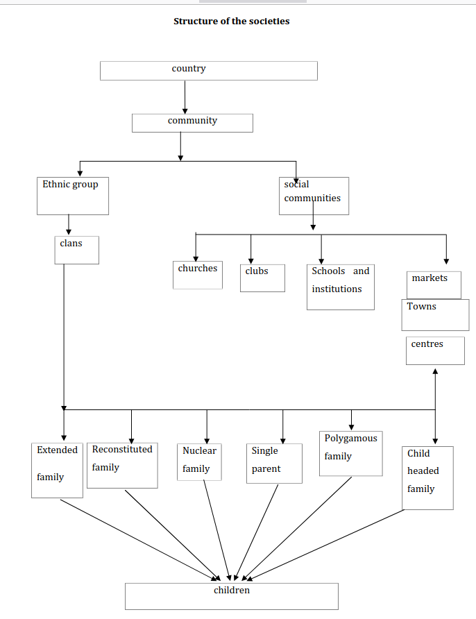

LESSON 2: Importance of social studies
Objectives
By the end of the lesson, students should be able to:
- Discuss the importance of social studies in the ECE curriculum.
- Describe the nature and scope of social studies.
- Describe types of families.
- Discuss the roles of families.
Social studies is a key area of study in ECE, as mentioned in Lesson 1. It:
- Creates awareness and understanding of the children’s environment and appreciation of it because children are adventurers and love experimenting, so they are natural explorers. Teachers should use the immediate environment to help them learn.
- Helps to develop a sense of belonging, being mindful of others, accepting others’ views, and becoming aware of factors that affect their surroundings.
- Children learn about their cultural values and appreciate cultural heritage through listening to stories, riddles, proverbs, poems, and so on. They also learn to appreciate other people’s cultures through oral literature or social interaction at school.
- Through role-play, which is a major teaching and learning activity in social studies, they develop positive attitudes towards work, different people, dress, and different kinds of foods.
- Develop positive attitudes towards animals after observing them during a visit or trip.
- Enables children to acquire desirable social, civic, and personal behavior important for social and individual education. This social learning enables the child to function in a given society.
- Helps the child to be a problem-solver, especially in solving personal, social, and environmental problems. Problem-solving helps the child to be creative and critical in matters pertaining to life. Through problem-solving, the child can also meet the demands of a challenging society.
Nature and scope of social studies
The child, being a member of society, needs to understand society’s structure, starting from organization and leadership. The structure of society starts from the child (smallest unit) to the country (largest unit). Children are born into families, which are members of social communities (churches, clubs, schools, institutions, and markets).
Structure of societies

As members of society, children should be able to know family members by name and other people in the home. They should understand their home well, i.e., food eaten, buildings at their home, furniture, domestic animals, clothes, utensils, among others. The teacher can ask them to draw and color family members or the food eaten, color the buildings, utensils, among others. They can also role-play family members' work. Be familiar with neighborhoods, local institutions, the president of the country, the national anthem, the national flag, and colors. To understand the neighborhood, they can take neighborhood walks, role-play family work, sing songs, and recite poems, etc.
FAMILY
Nuclear family
It is made up of a father, mother, and children (biological or adopted). The teacher should help the children know relations' names, e.g., mother, father, brother, sister; family residence; survival requirements, e.g., food, water, clothing, medical care, etc. They should know the role of each member. The nuclear family lives together unless separated due to economic or work reasons.
Extended family
Made up of other relatives and the nuclear family. They may share the same compound but live in different houses. The children should know the relatives' names, e.g., grandparents, uncles, aunts, cousins, etc., and address the older people respectfully in the extended family.
Single parent
May be made up of a father or mother and children. They live together and share resources. The children should be guided to know family members' roles, foods eaten, clothes worn, tools or utensils used, and respect for the parent should be instilled.
Polygamous family
A family with one husband and more than one wife. They may share a homestead, or some wives may stay far away. Each wife has her own house with her children. Children should be able to know relationship names, e.g., half-brother, half-sister, stepmother. Teachers should teach respect for family members.
Child-headed family
Contemporary issues in society have led to this kind of family. It consists of children alone. The elder sibling takes the role of the parent and organizes the younger ones. This family comes into existence due to many factors, e.g., death of parents due to HIV/AIDS, divorce, or when the extended family bond has broken.
Functions of the family
- Reproduction: For a society to maintain itself, it must be able to replace its dying members; therefore, the family contributes to the survival of the human race through its function of reproduction.
- Protection: Infants need constant care and economic security; therefore, the need to have a familiar environment since they are dependent on adults. It is the ultimate responsibility of adults to protect and bring up children in a responsible environment. Children are part of the community, i.e., they begin their social life by acquiring the status their family has instilled in them.
- Socialization: Parents and other key persons in the family monitor a child’s behavior. They also transmit appropriate norms, values, attitudes, and language to the child; therefore, the family becomes the first and most important socialization agent for a child.
- Regulation of sexual behaviors: Sexual norms are subject to change over time depending on the culture of that particular family, but whatever the time or period, cultural values in a society's standards of sexual behavior are more likely to be defined within the family circle. The structure of society influences these standards so that, characteristically, in male-dominated societies, formal and informal norms permit men to express and enjoy their sexual desires more freely than women.
- Affection and companionship: Ideally, the family provides warmth and intimate relationships that help children feel satisfied and secure. Unlike other social institutions like schools and churches, the family is obligated to serve the emotional needs of its members, to understand one another, to care for each other, and to be there when a need arises.
- Provision of social status: Children inherit social positions because of their family background and the reputation of their parents and siblings. The family unit presents a newborn child with an ascribed status of race and ethnicity that helps determine his or her place within a society (stratification systems). Family resources affect children’s ability to pursue certain opportunities, especially in education. Therefore, a family has the responsibility to fulfill several functions, for example, providing religious training, education, and recreational outlets. Although other social institutions have gradually assumed many of these functions, the family remains the most important landmark in a child’s development and growth.
Activity
- Distinguish the different types of families in your locality and discuss the roles of various family members.
- Show how the above relates to the study of society in ECE.